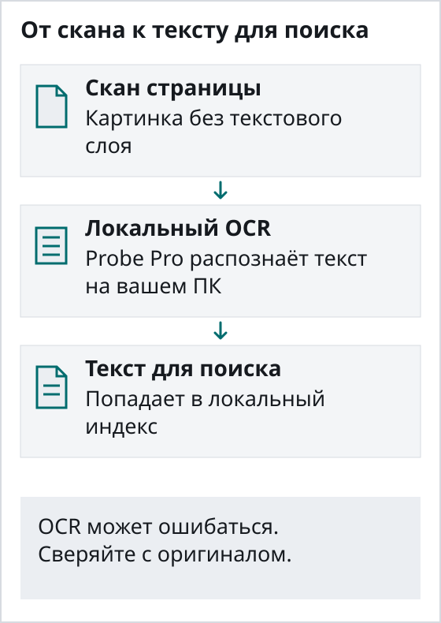
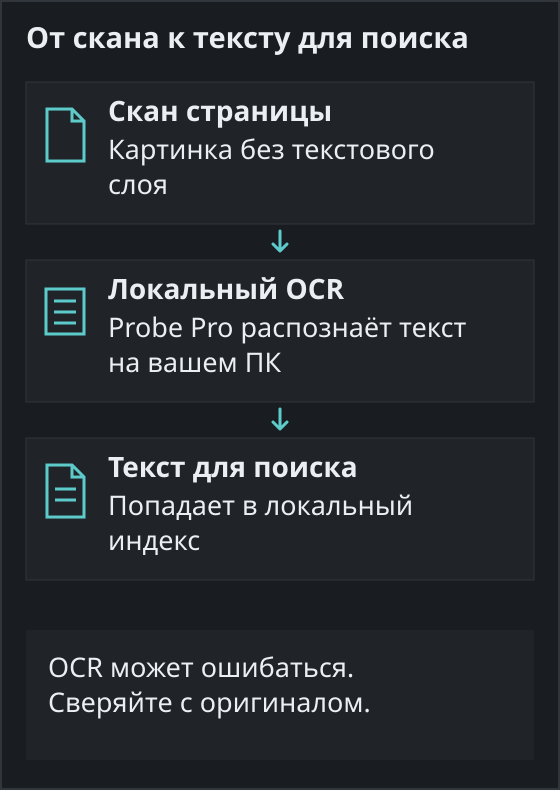

Поиск по сканам PDF в Windows
Отсканированный договор или счёт — это картинка с текстом, поэтому обычный поиск в нём ничего не находит. Linda Probe Pro распознаёт текст с помощью OCR на вашем компьютере и добавляет его в локальный индекс.
Почему поиск не видит сканы
В PDF со сканера часто нет текстового слоя. Вы видите слова, а программа поиска — нет. Пока страница не прошла OCR, поиск по фамилии или номеру договора ничего не вернёт.
Что делает Linda Probe
Добавьте папку, и Probe её проиндексирует. Pro распознаёт сканы и умеет создавать PDF с текстовым слоем. После этого можно искать по точным словам или описать то, что помните, посмотреть предпросмотр и открыть исходный файл. Модели OCR работают с латиницей и кириллицей.


Файлы остаются на вашем ПК
Индексация, OCR и поиск выполняются локально, документы не отправляются оператору. Интернет нужен для загрузки моделей, обновлений и проверки лицензии.
Чего ожидать
Качество OCR зависит от скана. На мятых страницах, при низком разрешении и на рукописном тексте возможны ошибки, поэтому важные документы сверяйте с оригиналом. Сначала проверьте программу на своих файлах.

Probe Pro стоит $10 разово для одного человека (до 3 устройств), $30 разово для команды до 10 человек или $500 в год для организации. Личное некоммерческое использование бесплатных функций ничего не стоит. Налог и итоговая сумма видны до оплаты.
Linda Probe работает в Windows 10 и 11 (x64). Дополнительные модели скачиваются после активации: нужны интернет, место на диске и совместимое оборудование. Версию, подписанную Microsoft, можно установить из Microsoft Store. Установщик с GitHub часто новее, но пока не подписан, поэтому SmartScreen может показать предупреждение: сверьте SHA-256 на странице релиза и выберите «Подробнее» → «Выполнить в любом случае».